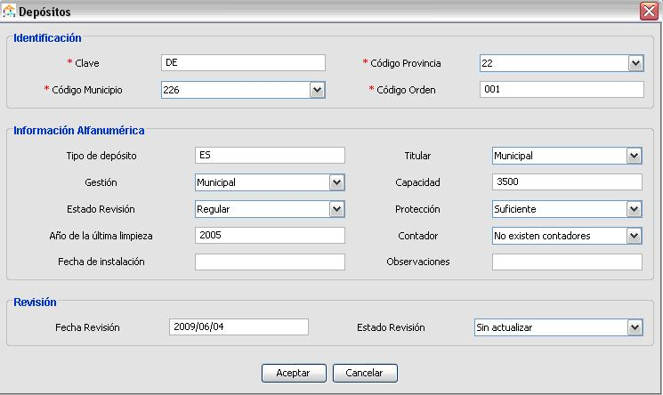
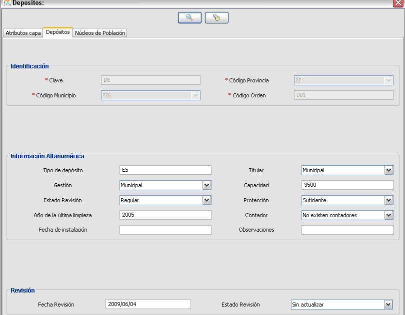

Edición de los Datos de la EIEL
Se trata de un módulo de carácter municipal (sólo actúa sobre el municipio indicado en el configurador) desde el cual se tiene acceso a la información de la EIEL.
Se distinguen claramente tres partes:
- Árbol de Datos Alfanuméricos: Agrupa las tablas alfanuméricas por categorías para que resulte más rápida e intuitiva su localización. Una vez seleccionada una entrada, justo debajo aparecerá una tabla con la información principal (campos clave) relativa al apartado seleccionado.
- Tabla con Información Alfanumérica: Se trata de una cabecera con los campos clave de la tabla alfanumérica seleccionada. Para mostrar el resto de campos, podemos pinchar en “Listar”. Al seleccionar un registro, podremos “Modificar” (cada uno de sus campos) o “Borrar” el registro en cuestión. Además, si está ligada a un elemento gráfico, se centrará la entidad relacionada en el mapa de la derecha.
También existe el botón de Añadir, el cual nos permite agregar una nueva entrada en la tabla.

- Mapa con todas las capas de la EIEL: En realidad se trata de un pequeño editor GIS reducido. La barra de herramientas aparece en la parte superior, las capas gráficas de la EIEL a la izquierda y el mapa (con todas las entidades de cada capa) a la derecha.
